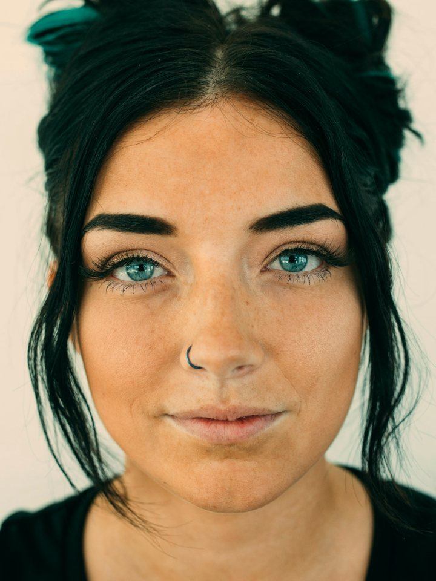
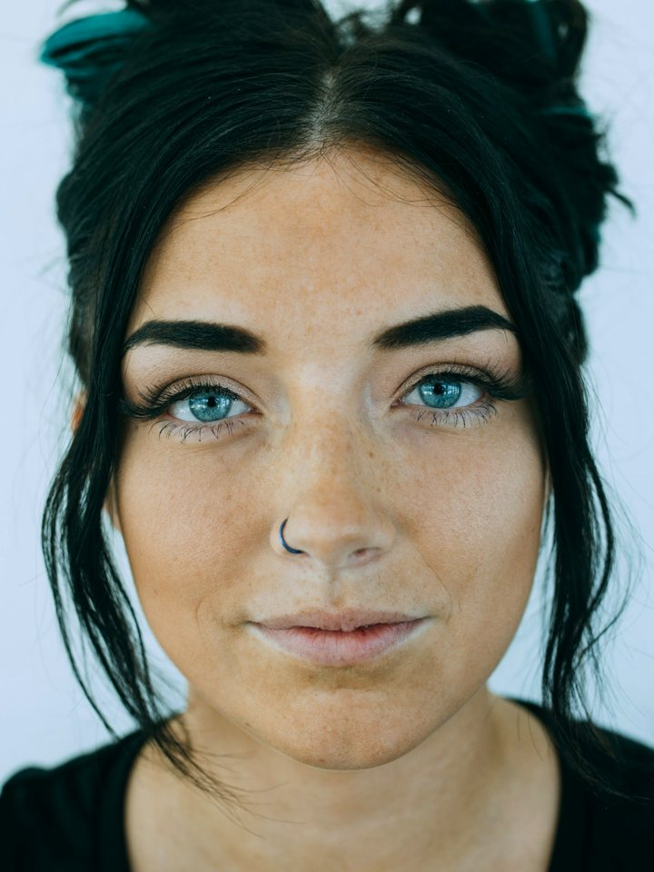

Skin analysis, honestly
An AI skin scan reads the photo, not your face. Change the bulb and the scores move. Same Light matches every check-in to your first photo's light, then tells you which changes are real.


One photo. We shifted only its colour temperature, the way a warm or a cool bulb would. YouCam pore score: 96 vs 85 — for skin that did not change at all.
What we measured before building this
points of difference when the identical photo is scanned three times. The YouCam scanner is deterministic.
points on one concern when only the colour temperature changed, warm to cool. Skin age moved up to 3 years with exposure alone.
points of fake change left after Same Light matches the light to the baseline — wrinkle and texture drift went to zero.
| Face | Light change | Score moved (skin unchanged) | After Same Light |
|---|---|---|---|
| A | cooler light | pores −7, texture −4 | pores +2, texture 0 |
| A | 20% darker | wrinkles +5 | wrinkles 0 |
| A | warmer light | pores +4, texture +3, wrinkles +2 | 0, 0, 0 |
| D | 20% brighter | blemishes −6, skin age +2 years | blemishes −4 |
YouCam AI Skin Analysis V2.1, SD. Light changes applied to the same photo (exposure ±20%, colour temperature warm/cool), so the skin is identical in every frame. Three faces under the Unsplash License (a fourth was refused by the API as too small in frame), 29 September 2026; raw data and scripts are in the repository.
Track a routine
This is the light every future check-in will be matched to. Take it where you will take the next ones.
Take a selfie or drop a photo
Face straight on, filling most of the frame. JPG or PNG.
Guided camera: YouCam JS Camera Kit in skin mode — it waits for a steady, well-lit, straight-on face and captures by itself.
Check a before & after
Add the two photos. Same Light scans both, then scans the after photo again with its light matched to the before photo. What survives the match is real; the rest is lighting.
Before photo
tap or drop
After photo
tap or drop